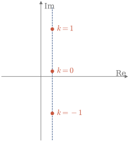
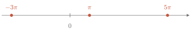

1.5 Funciones complejas
La fórmula de Euler y la regla de los exponentes permiten extender a los números complejos la exponencial, el logaritmo y las funciones trigonométricas.
Exponencial
Para z=x+iy, la exponencial se separa en dos factores: uno real, que da el módulo, y otro de módulo 1, que da la fase. Como e^{iy} se repite al sumar 2\pi a y, la exponencial compleja es periódica, de periodo 2\pi i.
Recuerda
e^z=e^{x+iy}=e^x\,e^{iy}=e^x(\cos y+i\sin y), \qquad |e^z|=e^x, \qquad \arg e^z=y.
Ejemplo 1.12
Calcular e^{1+i\pi/2} y e^{1+i\pi/2+2\pi i}.
e^{1+i\pi/2}=e\cdot e^{i\pi/2}=ei, con módulo e y fase \pi/2. Al sumar 2\pi i al exponente, el resultado no cambia: también da ei.
Logaritmo
El logaritmo de z es el número w tal que e^w=z. Por ejemplo, para z=-1: como -1=e^{i\pi}=e^{i(\pi+2\pi k)}, los números negativos ahora sí tienen logaritmo, y tienen infinitos, \ln(-1)=i(\pi+2\pi k), \qquad k\in\mathbb{Z}.
En general, con z=\rho e^{i\theta} y w=u+iv, la igualdad e^ue^{iv}=\rho e^{i\theta} da e^u=\rho y v=\theta+2\pi k. Todos los valores tienen la misma parte real y están alineados en vertical (Figura 1.9).

Figura 1.9. Valores de \ln(1+i)=\ln\sqrt2+i\left(\frac\pi4+2\pi k\right).
Cuando basta con un solo valor, se toma el valor principal, el que tiene la fase en (-\pi,\pi]. Por ejemplo, el de \ln(1+i) es \ln\sqrt2+i\pi/4, y el de \ln(-1) es i\pi.
Recuerda
\ln z=\ln\rho+i(\theta+2\pi k), \qquad k\in\mathbb{Z}.
Ejemplo 1.13
Calcular y representar z=\dfrac2i\ln\left(\dfrac{1+i}{1-i}\right). (2015/16 7E)
El cociente vale i (Ejemplo 1.7), y \ln i=i\left(\frac\pi2+2\pi k\right). Por tanto, z=\frac2i\cdot i\left(\frac\pi2+2\pi k\right)=\pi+4\pi k, \qquad k\in\mathbb{Z}. Son infinitos números reales, separados 4\pi (Figura 1.10).

Figura 1.10. Valores de z sobre el eje real.
Exponencial general
Una potencia con base y exponente complejos se define con el logaritmo, igual que en los reales, donde a^b=e^{b\ln a}. Como el logaritmo tiene infinitos valores, la potencia puede tenerlos también.
Recuerda
z_1^{z_2}=e^{z_2\ln z_1}.
Ejemplo 1.14
Calcular i^i.
Como \ln i=i\left(\frac\pi2+2\pi k\right), i^i=e^{i\ln i}=e^{i\cdot i\left(\frac\pi2+2\pi k\right)}=e^{-\frac\pi2-2\pi k}, \qquad k\in\mathbb{Z}. Todos los valores son reales. Con el valor principal del logaritmo (k=0), i^i=e^{-\pi/2}\approx0.208.
Funciones trigonométricas e hiperbólicas
Sumando y restando e^{i\theta}=\cos\theta+i\sin\theta y e^{-i\theta}=\cos\theta-i\sin\theta se despejan el coseno y el seno. Con esas expresiones, \theta puede pasar a ser cualquier número complejo z. El seno y el coseno hiperbólicos son las mismas expresiones sin ninguna i, y aparecen en \cos(iy)=\cosh y y \sin(iy)=i\sinh y.
Recuerda
\sin z=\frac{e^{iz}-e^{-iz}}{2i}, \qquad \cos z=\frac{e^{iz}+e^{-iz}}{2}, \qquad \sinh z=\frac{e^{z}-e^{-z}}{2}, \qquad \cosh z=\frac{e^{z}+e^{-z}}{2}.
Ejemplo 1.15
Razonar si es cierta la igualdad \cos\left(\frac\pi2+i\ln2\right)=-\frac{3i}{4}. (2013/14 3E)
Con z=\frac\pi2+i\ln2, e^{iz}=e^{i\pi/2}e^{-\ln2}=\frac i2, \qquad e^{-iz}=e^{-i\pi/2}e^{\ln2}=-2i. Por tanto, \cos z=\frac12\left(\frac i2-2i\right)=-\frac{3i}{4}, y la igualdad es cierta. El coseno de un número complejo no tiene por qué ser real.
Con los contenidos de esta sección puedes hacer los ejercicios 1.26–1.30.